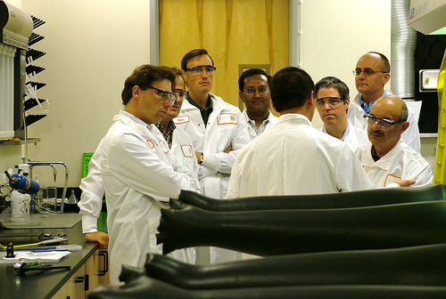
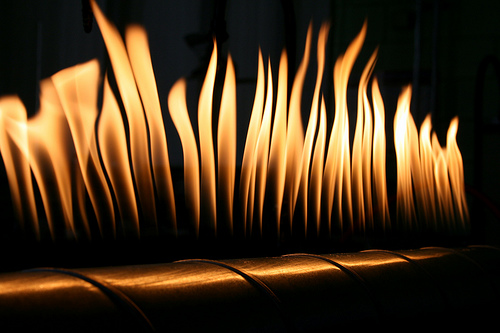

Transforman la madera en un material más duro que el acero
Por Olga Castro-Perea 
Ingenieros chilenos obtienen SiC biomórfico a partir de madera de haya y de pino. Ingenieros de la Universidad de Chile han conseguido crear SiC biomórfico, un carburo, combinación de carbono y metal, que es más duro que el acero, siguiendo un proceso de petrificación o endurecimiento de la madera con medios más simples y baratos de los usados normalmente. El producto final no pudo cortarse con una sierra de acero, sino con una sierra diamantada, es decir una sierra tan dura como el diamante. Esta cerámica obtenida de la madera es útil especialmente en aplicaciones a elevadas temperaturas (puede aguantar hasta los 1.650 ºC), como resistencias eléctricas o reforzantes estructurales.
Dos estudiantes de la Universidad de Chile han conseguido obtener, a partir de madera de haya y de pino, carburo de silicio o SiC biomórfico, un carburo que tiene estructura de diamante y que es más duro que el acero. Este carburo ya se fabrica o se hace en otros países a partir de arenas o cuarzo de alta pureza y coke de petróleo fusionados en horno eléctrico a más de 2000 ºC. La novedad del logro de la universidad chilena nos informa que los medios utilizados en esta ocasión para obtener el SiC han sido menos sofisticados y, por tanto, más baratos, al utilizar madera de haya y de pino en el proceso. De esta forma, Rodrigo Mena y Juan Esteban Toro, estudiantes de Ingeniería Mecánica, han conseguido petrificar la madera y obtener SiC a través de ella, superando así un gran desafío tecnológico, informa la Universidad de Chile en un comunicado.
El profesor de dicha universidad, Marco Antonio Béjar, planteó a los estudiantes el reto porque quería encontrar una forma de fabricar elementos resistentes a altas temperaturas, en este caso, las de un horno que funcionaría a alrededor de 1.200 ºC. Béjar explicó que normalmente, en los hornos que usan calefactor metálico, cuando la temperatura sobrepasa los 1.200 ºC se produce una oxidación muy acelerada, que provoca la destrucción del calefactor.
Proceso de fabricación
Las ventajas del SiC radican en sus características, tales como una expansión térmica relativamente baja, un alto ratio fuerza-peso, alta conductividad térmica, dureza, resistencia a la abrasión y a la corrosión, y mantenimiento de la resistencia elástica a temperaturas de hasta 1.650 ºC. Además, el SiC es una cerámica conductora de la electricidad y es muy estable a la oxidación.
El método seguido por los estudiantes para obtener este material a partir de la madera fue similar a lo que sucede cuando la lava de un volcán envuelve un árbol y lo petrifica. Según Béjar, “la lava atrapa al árbol y lo quema sin contacto con oxígeno. La madera pierde el hidrógeno, el oxígeno y queda el